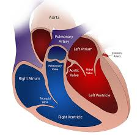

|  |
Se están desarrollando corazones bioartificiales utilizando técnicas de ingeniería de tejidos y bioimpresión 3D. Estos corazones se fabrican utilizando células y biomateriales, y se espera que puedan ser una solución viable para la insuficiencia cardíaca en el futuro. La biocompatibilidad y la integración con el sistema circulatorio son aspectos clave en su fabricación y funcionamiento. |